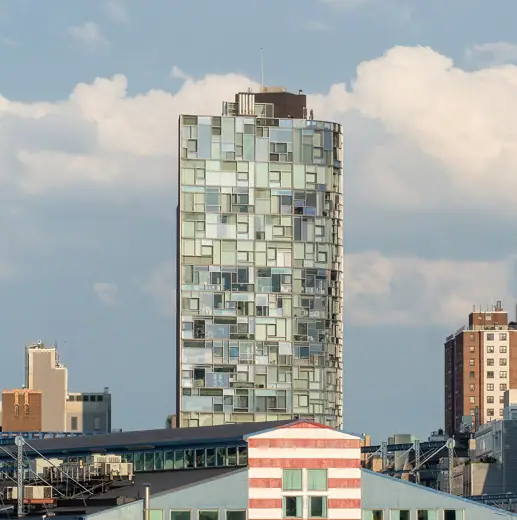
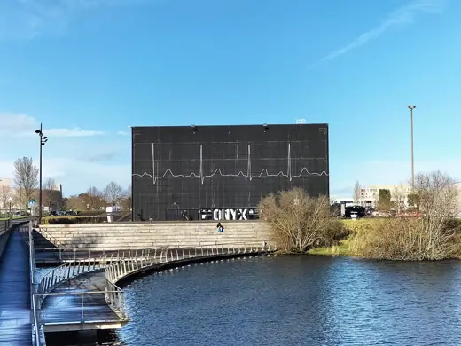
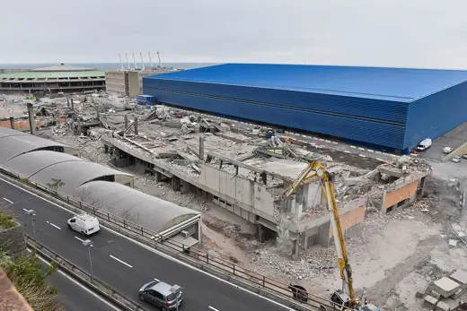
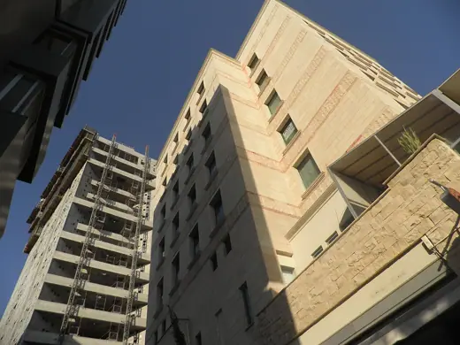

Jean Nouvel buildings 27
Sort
 Nemausus1987 · Nîmes
Nemausus1987 · Nîmes Opéra de Lyon1993 · Lyon
Opéra de Lyon1993 · Lyon Fondation Cartier1994 · Paris
Fondation Cartier1994 · Paris Golden Angel2000 · Prague
Golden Angel2000 · Prague Nantes Courthouse2000 · Nantes
Nantes Courthouse2000 · Nantes Leeum, Samsung Museum of Art2004 · Seoul
Leeum, Samsung Museum of Art2004 · Seoul Reina Sofía Museum Extension2005 · Madrid
Reina Sofía Museum Extension2005 · Madrid Guthrie Theater2006 · Minneapolis
Guthrie Theater2006 · Minneapolis Musée du quai Branly2006 · Paris
Musée du quai Branly2006 · Paris
100 Eleventh Avenue2010 · New York Doha Tower2012 · Doha
Doha Tower2012 · Doha One Central Park2014 · Sydney
One Central Park2014 · Sydney 53W532019 · New York
53W532019 · New York
ONYX theater1988 · Saint-Herblain Palais des Congrès de Tours1993 · Tours
Palais des Congrès de Tours1993 · Tours Galeries Lafayette Berlin1996 · Berlin
Galeries Lafayette Berlin1996 · Berlin Lucerne Culture and Congress Centre (KKL)2000 · Lucerne
Lucerne Culture and Congress Centre (KKL)2000 · Lucerne Dentsu Building (Caretta Shiodome)2002 · Tokyo
Dentsu Building (Caretta Shiodome)2002 · Tokyo Torre Glòries2005 · Barcelona
Torre Glòries2005 · Barcelona
Blue Pavilion2009 · Genoa DR Koncerthuset2009 · Copenhagen
DR Koncerthuset2009 · Copenhagen Tour Horizons2011 · Boulogne-Billancourt
Tour Horizons2011 · Boulogne-Billancourt
Tower 252013 · Nicosia Philharmonie de Paris2015 · Paris
Philharmonie de Paris2015 · Paris Louvre Abu Dhabi2017 · Abu Dhabi
Louvre Abu Dhabi2017 · Abu Dhabi National Museum of Qatar2019 · Doha
National Museum of Qatar2019 · Doha Tour Duo2021 · Paris
Tour Duo2021 · Paris